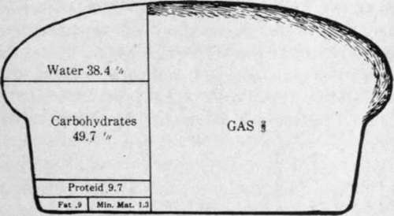

How To Make Fermented Breads
Description
This section is from the book "Food And Cookery, Their Relation To Health", by H. S. Anderson. Also available from Amazon: Food Cookery, Their Relation To Health.
How To Make Fermented Breads
Weight for weight, bread must be considered one of the most nutritious of foods. The fact that more than three-fifths of it consists of solid nutriment and less than two-fifths water, gives it a special place in the list of foods, and with it there is no animal food and but few cooked vegetable foods that can make a comparison.
In the study of the chemical composition of bread we find that two-thirds of the volume of a good loaf of bread is made up of gas, and of the solid part less than forty per cent consists of water. Of the chemical constituents necessary for proper nutrition, bread yields a large proportion of carbohydrates, a liberal amount of proteid and mineral matter, and a small amount of fat, making it one of the most nutritious and well-balanced articles of diet.
"The common use of superfine white flour in bread making is neither healthful nor economical." While the white flour products have a greater total nutritive value, they are really an impoverished food; for in rejecting the germ and the bran, the miller discards some of the most useful constituents of wheat. With the germ, proteid and fat are lost; and the bran being impregnated with mineral matter, when separated from the wheat leaves the bread void of these substances which are so necessary for the building of bone, brain, and nerves. To the natural taste there is something lacking, something not satisfying in the white bread, but which is found in that made from the whole grain. This leaves a craving which many attempt to satisfy with rich pastries, meat, spices, and condiments. Fine flour bread is also a frequent cause of constipation and other unhealthful conditions.
In order to make good bread it is necessary to have good flour. The strength of a flour is determined by the quantity of gluten it contains. Gluten is the chief form of the proteid of wheat. Its elastic qualities when mixed with water, and acted upon by yeast, allow the gas formed to expand without danger of escape. The best flour generally proves to be the most economical, for while it costs more than inferior grades, it is in reality cheaper, because a given quantity of good flour makes more and better bread than the same quantity of poor flour. The best bread flour is of a cream white color, and when a handful is taken and squeezed it should not retain the imprint of the fingers, but should fall like dry sand. Ordinary pastry flour when handled in this way will retain its shape in the hand, remaining in one lump.
Fig. 3. Chemical composition of a loaf of wholewheat bread.
Quick rising bread, that is, bread which is brought out in five or six hours, requires more yeast than bread which is allowed to rise over night, but is generally more satisfactory; for the more times bread is allowed to rise, the lighter and finer grained it will be; but some of the wheat flavor will be destroyed. This is the reason that ordinary baker's bread is always lacking in that sweet, nutty, wheat flavor, which so characterizes home made bread, and which makes it so satisfying. The idea, therefore, to be kept before us in bread making, is to produce an article rich in nutritive elements, toothsome, and easily digestible.
Fermented bread is usually made by mixing to a dough, flour, water, salt, and yeast, a small amount of sugar being added to hasten fermentation. The dough is then kneaded until it is elastic to the touch and does not stick to the board; the object being to incorporate air and to distribute the yeast uniformly. It is then covered and allowed to rise until it doubles its bulk and does not respond to the touch; or when tapped sharply with the fingers, it gradually but stubbornly begins to sink down. This will require all the way from three to three and one-half hours, and it is best accomplished at a temperature ranging from 75° to 85° F. It is then pressed down in the center and worked together a little, turned over in the bowl and allowed to rise again until about half its former bulk. This will take about three-quarters of an hour or more. It is then turned out on a lightly floured board and kneaded a few minutes, to break the air bubbles and to distribute evenly the gas formed. Then it is molded into loaves, put into pans, and allowed to rise until it doubles its bulk, when it is ready for baking.
Bread should never be allowed to rise until it begins to fall of itself. At this stage it has risen too much and borders on sourness. There are three stages of fermentation; namely, alcoholic, acetous, and putrefactive. Bread should be baked during the alcoholic stage. If fermentation is allowed to go on after the yeast has done its work, bacterial action begins which results in sour bread. It is very important to know when the bread is sufficiently light after it has been placed in the pans. It should never be allowed to rise to its limit before it is put into the oven; but should continue to rise for the first ten to twelve minutes after it has been put into the oven. It is better to bake the bread a little too soon, than to allow it to rise too much. If it rises too much, it will be course grained and tasteless. If the bread should in any wise get too light in the pans, it may be molded over and allowed to rise again.
To test the lightness of the dough in the pans, press the loaf gently with the finger, and if it responds quickly to the touch, it may be allowed to rise more. If it responds slowly it should be put into the oven immediately.
Wholewheat or graham bread must not be allowed to go quite so far in the process of fermentation as white bread. Because of the bulkiness of the whole grain, the gas escapes more easily than from that made with a strong gluten flour. Graham and wholewheat bread should be watched closely during the different stages of development, as they rise and get light in less time than white bread. Where wholewheat flour is made from good hard wheat, that is, wheat which is grown where the summers are short and not too hot (as Dakota and Minnesota), the best bread is made from the whole grain using no white flour, or a very little. The dough is a little harder to handle, but you have the sweet wheat flavor. The mineral substances contained in wheat which are so essential to health are then retained in the bread, adding much to its flavor.
For those who can not use the grain in this form, it is well to use a little rye and oatmeal with the white flour,—about one-third or one-fourth part rye and oatmeal to two or three parts best bread flour.
The western wheat, also that grown farther south, is a soft wheat and does not of itself make good bread, but must be combined with a strong gluten flour. It is very often that graham or wholewheat flour is made from this kind of wheat; then it can only be used in bread making in the proportion of one part graham or wholewheat to two parts strong white bread flour, or about these proportions.
Bread is also made by setting a sponge at the beginning, making a batter of the water, yeast, and flour, and letting it rise until the batter gets charged with the yeast, then adding any other ingredients, as fruit and shortening for fruit bread, the shortening for buns, or the cracked grain for coarse bread; and then working it all into a dough. Ordinary white bread, wholewheat, and graham, are often made by the same process. A sponge is sufficiently light when it appears frothy and is full of bubbles. It will not rise much. The time required will vary with the quantity and quality of yeast used, and the temperature of the room where it is set to rise.
As a general rule,' with the best quality of bread flour, three measures of flour to one of water are required to make a dough of the proper consistency. For wholewheat or graham bread, a little less flour is used to the same amount of liquid. Buns and fruit bread which must be of a softer dough, require still less flour, as may be seen later.
The most convenient yeast is that sold as compressed yeast. It should be used only when fresh, which may be determined by its light color and absence of dark streaks. When compressed yeast is not obtainable, very good results are secured by the use of the following recipe:—
Two cups sliced raw potatoes, 2 tablespoons sugar, 1 cake dried yeast.
Add enough cold water to cover the sliced potatoes, and cook well done. Mash them through a colander, and add enough hot water to make one and one-half quarts in all. When cool, add the sugar and the yeast cake (which in the meanwhile has been dissolved in one-half cup of water), and mix well, cover tightly, and let it stand in a warm room over night. In the morning it should be lively and covered with a white foam.
For Ordinary Bread—white, wholewheat, etc.,—use l 1/2 cups liquid yeast and 3/4 cup water to 6 1/2 cups good flour. For buns, fruit bread, etc., the yeast is used a very little stronger than for ordinary bread: 1 1/2 cups liquid yeast to 1/2 cup water. To keep this yeast, put it into a glass or stone jar, cover well, and keep it in a dark cool place.
Continue to: